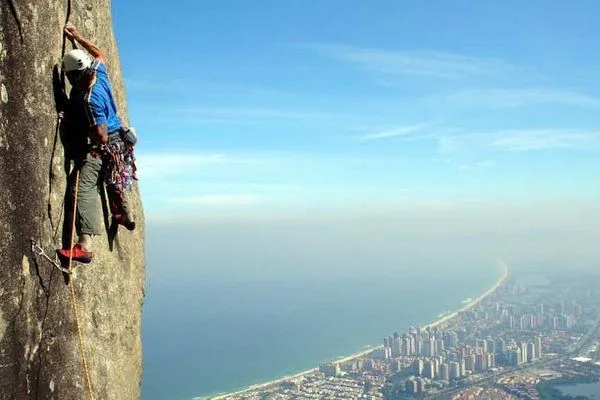
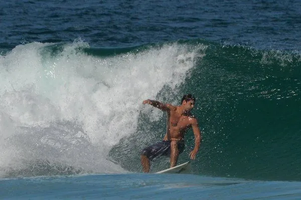
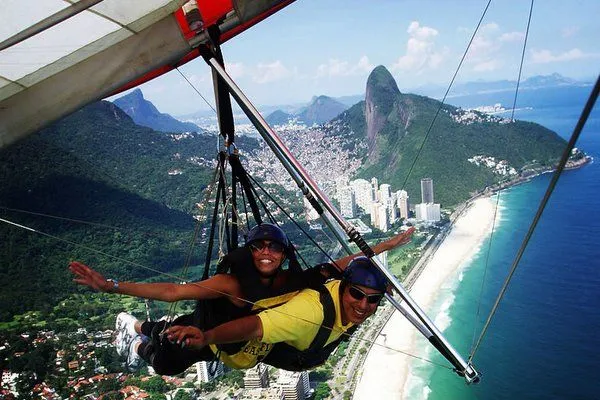

Realizar trekking o senderismo a través de la Mata
Atlántica que rodea
Rio de Janeiro, además de
proporcionar un contacto directo con la naturaleza, es una de las mejores formas de
contemplar
la
bellísimos paisajes que ofrece la ciudad.
Escalada

Rio es también una de las regiones metropolitanas con más rutas de
escalada del mundo. Su
particular
geografía, con sus morros de mediana y gran altura, con paredes de roca perfectas
para que los
amantes
de este deporte disfruten en grande.
Surf

Desde los años 70, el surf ha ido conquistando los numerosos
kilómetros
de playas de Rio de Janeiro y cada vez más hay más practicantes de este
emocionante deporte. En la zona más turística, se pueden conseguir olas aceptables
entre
el Puesto 4 y 5 de la playa de
Copacabana.
Parapente

Para aquellos que hayan visto Río de Janeiro desde los miradores más
conocidos,
les guste la adrenalina y busquen un punto de vista más elevado y dinámico, tienen
que
experimentar el vuelo libre con ala delta o
parapente
desde Pedra Bonita.